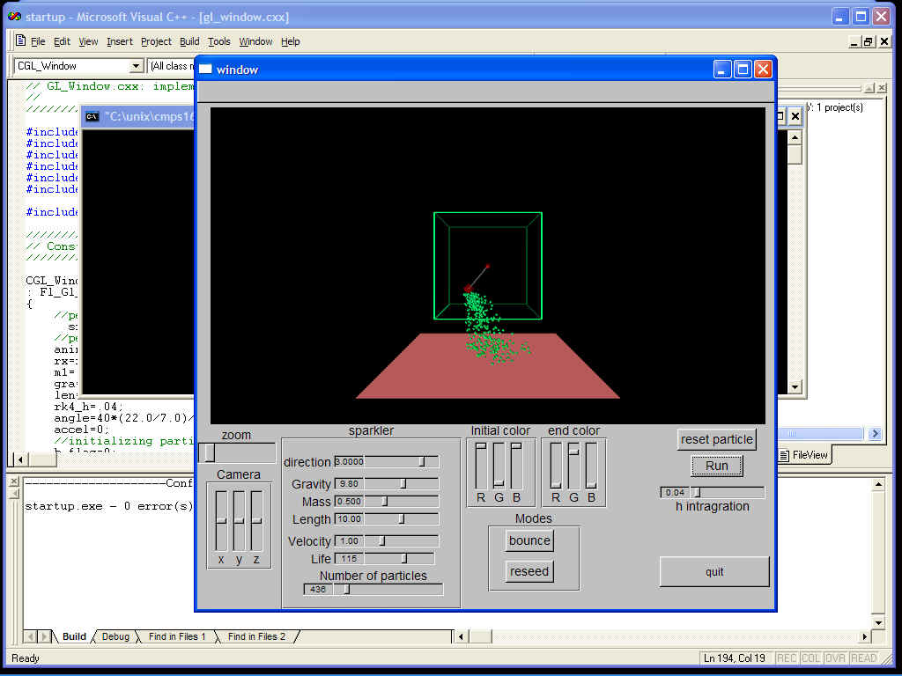

To use actual physics equations to simulate a single swinging pendulum and a particle system spawning from the end of the ball. I used the Runge-Kutta Algorithm to get an numerical approximation for the motion of the pendulum and the particle.
I developed the program in MS visual C++ 6.0 programming environment, and a unix programming environment. Before you build the program in unix or in MS visual C++ 6.0 , you must open up the gui.fl using fluid and use the write command located under the file menu. This will produce gui.cxx and gui.h. Now that you have gui.cxx and gui.h you can build the project from the command line under unix. Assuming that the proper complier, fltk and openGL libraries are installed, you can simple type make at the command prompt in the directory the program files are located in. This will create "prog5", an executible program. In windows you have to load the project file then type f7 or click on the build button. When the project is built it creates an executeible file that can be run by typing [control f5], or clicking the build button. This will bring up the program.
You should now see something similar to this. 
Initially you might not see anything anything, which can be solved by moving the zoom slider around. To start the pendulum swinging click on the run toggle. To start the particles set the slider, number of particles to some value. You will now see the particles. Most of the sliders are self explanatory. The direction sliders changes the value of a number that is used to set the initial velocity and direction of the particles. In use with the Velocity slider the direction slider can change the size of the explosion of particles. I also created two modes that the system can be run in. Bounce mode makes the particles bounce off the ground plane, while reseed mode make the particles start over the second the hit the ground plane. You can also change the initial color and the end color, camera angles, and the speed of the integration, and various particles system parameters.
I am not sure why but the bounce only bounces once and then continues through the plane. I did not want to spend time trying to figure out the problem, because the final project is worth much more than this project. In the windows system the initial camera setting are bad. But under the unix systems the camera settings are fine.
PreCompiled version of the application Win32 Particle